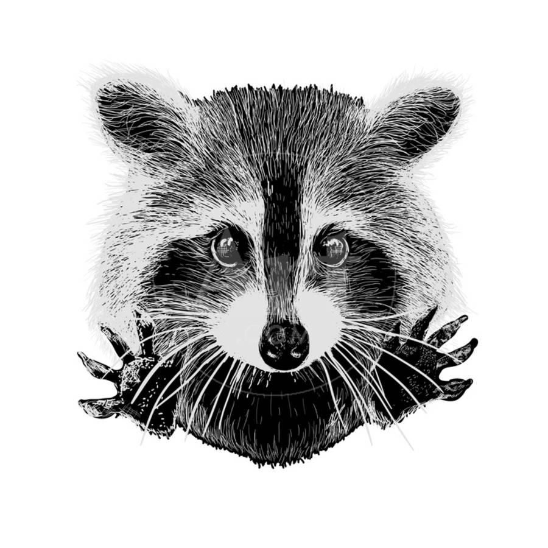

|  |
Juniper Coonor, Rebecca Wentworth-Kuhn
I'm a highly creative, collaborative, and upbeat individual; nature lover and an artist who enjoys task-oriented problem solving where I can use my technical skills alongside my natural creativity. Check out some of my hobbies or, send me a note. |
Franklin University - BS Applied Psychology Magna Cum Laude